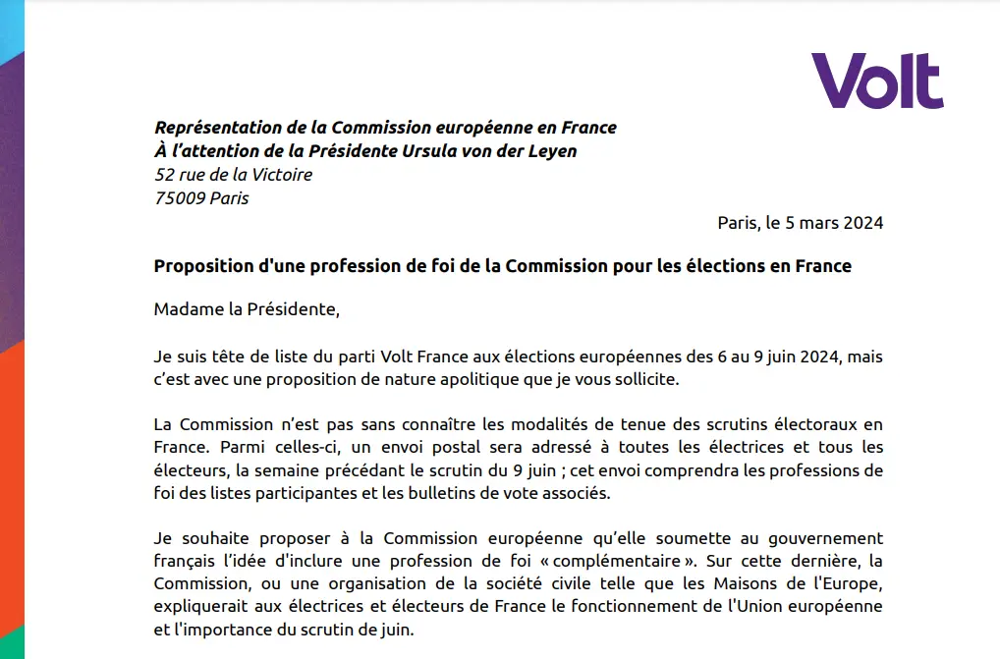
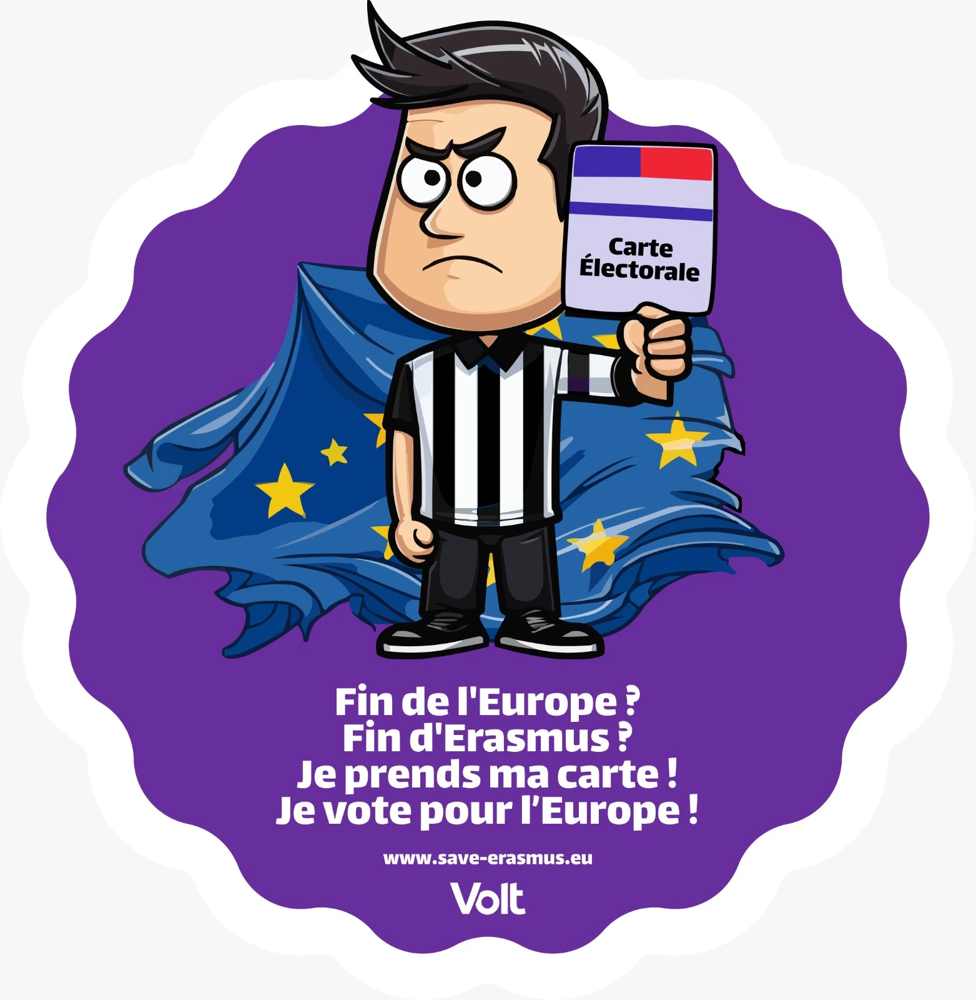
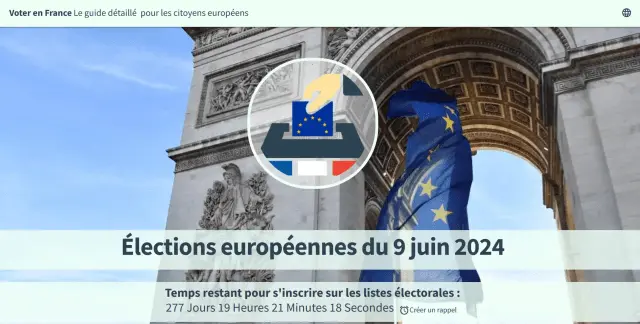
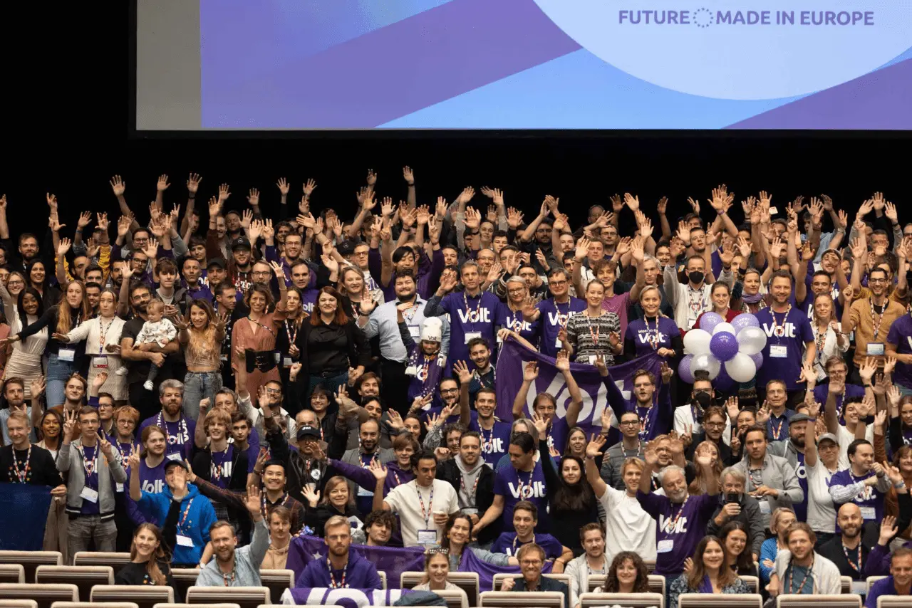

Bonjour! Mein Name ist Sven Franck und ich bin Spitzenkandidat von Volt France für die Europawahlen 2024 und auf Platz 7 in der Koalition Europe Territoires Écologie. Auf dieser Seite erfährst Du mehr über mich und meine politischen Prioritäten, warum ich Mitglied von Volt geworden bin und was ich im wirklichen Leben mache. Verfolge meine Kampagne und wenn Du glaubst, dass ich ein Dich und Deine Ideen im Europaparlament vertreten kann, stimme für mich in der Europawahl in Frankreich!
Meine Initiativen

Eine Profession de foi für Europa
Mein Brief an den Präsidenten der Europäischen Kommission, um die französische Regierung zu bitten, ein Glaubensbekenntnis über Europa in die offizielle Postsendung aufzunehmen, um die Wahlbeteiligung zu erhöhen. Den Brief lesen

save-erasmus.eu
Auf dem gesamten Kontinent fordern Rechtsextreme die Auflösung der Europäischen Union. Dieses Ende Europas wird auch das Ende von Erasmus bedeuten. Bestellen wir unsere Wahlkarten und stimmen wir für Europa, um Erasmus zu retten! Mehr erfahren

votefrance.eu
In Frankreich leben zwischen 1,5 Millionen und 2 Millionen EU-Bürger aus anderen Mitgliedstaaten. Registrieren wir uns auf den Wähllisten um 2024 in Frankreich zu wählen und sicherzustellen, dass die Rechtsextremen keine Mehrheit für Frankreich ins Europaparlament entsenden. Mehr erfahren
Eine der Stärken Europas liegt in der Vielfalt unserer KMUs (kleine und mittlere Unternehmen). Ein europäischer Small Businss Act wird einen Teil der öffentlichen Aufträge für KMUs reservieren, sicherstellen, dass auf europäischer und nationaler Ebene verabschiedete Gesetzgebungen KMUs nicht unverhältnismäßig benachteiligen, und einen Ausgleich zwischen Standardisierung, Offenheit und Interoperabilität schaffen. Europa muss seinen eigenen wirtschaftlichen Ansatz finden, der Vielfalt, Nachhaltigkeit und Wettbewerbsfähigkeit vereint. Lasst uns sicherstellen, dass europäische KMUs weltweit den Ton angeben.
Es gibt über 15 Millionen mobile EU-Bürger, die in einem anderen EU-Mitgliedstaat als ihrem Herkunftsland leben und arbeiten. Indem sie die europäische Idee leben, unterstützen sie indirekt den Nationalismus, da sie nicht bei allen Wahlen in ihrem Wohnsitzland abstimmen können und oft ausgeschlossen sind oder wenig Anreiz haben, in ihrem Herkunftsland zu wählen. Unsere Demokratien benötigen diese Stimmen, lasst uns am allgemeines Wahlrecht für mobile EU-Bürger arbeiten.
Die Außenpolitik Europas ist heute eine Kakophonie von 27 Mitgliedstaaten und der Kommission, von denen jeder seine eigenen Ziele hat. In einer Zeit, in der es nicht mehr ausreicht, Frieden und Stabilität innerhalb der Europäischen Union zu bewahren, wird es für Europa entscheidend, eine angemessene Außenpolitik zu entwickeln. Diese muss darauf abzielen, Frieden und Stabilität im Ausland zu bewahren und die Werte verteidigen halten, die wir von anderen Ländern erwarten. Es ist Zeit für eine europäische Außenpolitik.
Online-Abzocke ist ein Problem, das sowohl junge als auch ältere Menschen betrifft und sich mit immer ausgefeilterer Technologie nur noch verschlimmern wird. Die Lösung ist relativ einfach und sollte Online-Händler und Finanzinstitute dazu verpflichten, Transaktionen zu kennzeichnen, die ein hohes Risiko für Online-Betrug darstellen (zum Beispiel wenn Ihre Großmutter 25.000 Euro nach Ghana überweist). Schützen wir unsere Mitbürger vor Online-Betrug!
Ich bin Mitglied von Volt, einer europäischen Bewegung und politischen Partei mit über 25.000 Mitgliedern in 31 europäischen Ländern. Mit unseren gewählten Vertretern auf europäischer, nationaler und lokaler Ebene stehen wir für ein paneuropäisches Programm. Ein Kernpunkt dieses Programms ist die Reform der Europäischen Union zu einem föderalen Europa, das nicht nur eine wirtschaftliche, sondern auch eine demokratische und soziale Union ist für alle Bürger Europas ist. Volt's Vision, die Politik zum Besseren zu verändern, ist ein langfristiges Projekt. Du kannst uns dabei unterstützen. Indem Du bei Volt mitmachst. Indem Du uns finanziell unterstützt. Und indem Du Volt Deine Stimme bei den Europawahlen gibst!

Wer Politik verändern will, hebe bitte die Hand